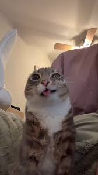
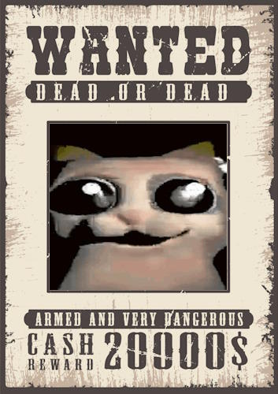
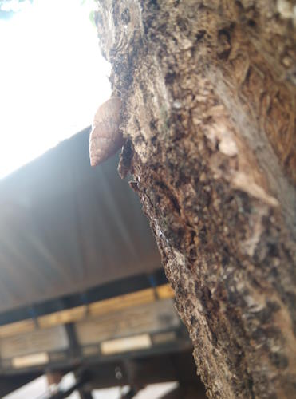
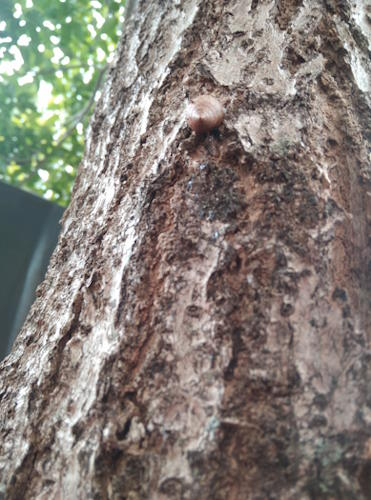

Meu nome é Ismael Klauss Napanga Agreda, nasci e vivi meus 22 anos na mesma cidade desse campus da UTFPR. Gosto de ouvir músicas e de brincar com imagens, vídeos e áudios (nada profissional). Não tenho algo favorito atualmente, vou apenas curtindo algo no momento.
Sobre meu tempo de escola não tenho muito que contar, já que nunca fui tão falativo fora de casa e não cheguei a formar laços que duraram depois dela. Por outro lado, posso dizer que praticamente toda minha infância foi em casa ao lado dos meus 5 Irmãos, meu Pai e minha Mãe. Naqueles tempos agente passava muitas horas com brincadeiras em casa ou nas ruas, coisas simples mas que foram boas pra minha infância, coisas como Futebol de rua, empinar pipas, guerra com balões de água, esconde-esconde. As minhas atividades favoritas (que pra falar a verdade até hoje gosto um pouco) eram pegar Cigarras e Caracois. As cigarras eu acho que gostava porque elas só apareciam em epócas específicas do ano, então era um "evento" pegar o máximo e soltar, e o caracol por aparecer depois de dias chuvosos, e também por ser um bixo tão tranquilo.


Essa luta do GATO contra a SETA foi para praticar como usar as tags img, figure e figcaption. E também o atributo alt.
Lista com imagens de gatos, a intenção era recortar todos imagens de gatos num editor de imagens, remover o fundo, e salvar no formato PNG. Eu só consegui fazer com uma das imagens.

Aqui um uso da tag de link pra abrir um vídeo do Youtube em outra aba LINK aqui
Caso prefira aqui deixo o mesmo vídeo disponível, porém está dentro de um iframe:
Este é meu progresso atual de HTML, eu realmente estava gostando de usar o HTML pra brincar muito com imagens, áudios e vídeos. Infelizmente acabei deixando pra um prazo apertado e não consegui aproveitar direito de outras funções do HTML e esse final acabou sendo muito apressado e acabou tendo uns erros como o uso do BREAK excessivo, tive que usar muito pra ajustar visualmente a posição de imagens, porém não é ideal usar eles. Outro erro que ficou foi a falta de ATRIBUTOS nas imagens da lista de gatos...